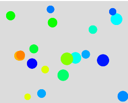
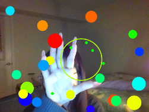

the first concept
I want to add some new functions into my original interactive UI. one of them is making some bubbles in the screen. And when they touch your hands, the bubbles will be bounced to the other direction.
problems
When I rotated my finger, the color didn't change, even though I mapped the value to the HSB color range; ultimately, there were only two distinct color variations displayed.
figure out and update


The screen displays initial colored bubbles. When the camera detects my finger, it identifies the fingertip and draws a circle around it. I can interact with the bubbles by controlling this circle; when a bubble touches the circle, it bounces off.